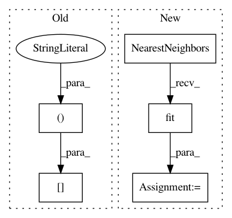

e52e9c8d7536b6315da655164951060642a52707,sklearn/manifold/tests/test_t_sne.py,,test_binary_perplexity_stability,#,162
Before Change
distances = np.abs(distances.dot(distances.T))
np.fill_diagonal(distances, 0.0)
last_P = None
neighbors_nn = np.argsort(distances, axis=1)[:, :k].astype(np.int64,
copy=False)
for _ in range(100):
P = _binary_search_perplexity(distances.copy(), neighbors_nn.copy(),
After Change
n_samples = 100
random_state = check_random_state(0)
data = random_state.randn(n_samples, 5)
nn = NearestNeighbors().fit(data)
distance_graph = nn.kneighbors_graph(n_neighbors=n_neighbors,
mode="distance")
distances = distance_graph.data.astype(np.float32, copy=False)
distances = distances.reshape(n_samples, n_neighbors)
last_P = None
desired_perplexity = 3
In pattern: SUPERPATTERN
Frequency: 3
Non-data size: 5
Instances
Project Name: scikit-learn/scikit-learn
Commit Name: e52e9c8d7536b6315da655164951060642a52707
Time: 2019-09-18
Author: tom.dupre-la-tour@m4x.org
File Name: sklearn/manifold/tests/test_t_sne.py
Class Name:
Method Name: test_binary_perplexity_stability
Project Name: nilearn/nilearn
Commit Name: 4f6dbaf01abc26d9c33cdadf0739503e9c53f294
Time: 2012-10-02
Author: alexandre.abraham@cea.fr
File Name: nisl/searchlight.py
Class Name: SearchLight
Method Name: fit
Project Name: scikit-learn/scikit-learn
Commit Name: e52e9c8d7536b6315da655164951060642a52707
Time: 2019-09-18
Author: tom.dupre-la-tour@m4x.org
File Name: sklearn/manifold/tests/test_t_sne.py
Class Name:
Method Name: test_barnes_hut_angle